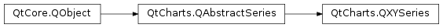

QtCharts.QXYSeries¶
Inherited by: QtCharts.QLineSeries, QtCharts.QSplineSeries, QtCharts.QScatterSeries
Note
This class was introduced in Qt 5.7.
Synopsis¶
Functions¶
- def
__lshift__(point) - def
__lshift__(points) - def
append(point) - def
append(points) - def
append(x, y) - def
at(index) - def
brush() - def
clear() - def
count() - def
insert(index, point) - def
pen() - def
pointLabelsClipping() - def
pointLabelsColor() - def
pointLabelsFont() - def
pointLabelsFormat() - def
pointLabelsVisible() - def
points() - def
pointsVector() - def
pointsVisible() - def
remove(index) - def
remove(point) - def
remove(x, y) - def
removePoints(index, count) - def
replace(index, newPoint) - def
replace(index, newX, newY) - def
replace(oldPoint, newPoint) - def
replace(oldX, oldY, newX, newY) - def
replace(points) - def
replace(points) - def
setPointLabelsClipping([enabled=true]) - def
setPointLabelsColor(color) - def
setPointLabelsFont(font) - def
setPointLabelsFormat(format) - def
setPointLabelsVisible([visible=true]) - def
setPointsVisible([visible=true])
Signals¶
- def
clicked(point) - def
colorChanged(color) - def
doubleClicked(point) - def
hovered(point, state) - def
penChanged(pen) - def
pointAdded(index) - def
pointLabelsClippingChanged(clipping) - def
pointLabelsColorChanged(color) - def
pointLabelsFontChanged(font) - def
pointLabelsFormatChanged(format) - def
pointLabelsVisibilityChanged(visible) - def
pointRemoved(index) - def
pointReplaced(index) - def
pointsRemoved(index, count) - def
pointsReplaced() - def
pressed(point) - def
released(point)
Detailed Description¶
-
PySide2.QtCharts.QtCharts.QXYSeries.append(point)¶ Parameters: point – PySide2.QtCore.QPointF
-
PySide2.QtCharts.QtCharts.QXYSeries.append(x, y) Parameters: - x –
PySide2.QtCore.qreal - y –
PySide2.QtCore.qreal
- x –
-
PySide2.QtCharts.QtCharts.QXYSeries.append(points) Parameters: points –
-
PySide2.QtCharts.QtCharts.QXYSeries.at(index)¶ Parameters: index – PySide2.QtCore.intReturn type: PySide2.QtCore.QPointF
-
PySide2.QtCharts.QtCharts.QXYSeries.brush()¶ Return type: PySide2.QtGui.QBrush
-
PySide2.QtCharts.QtCharts.QXYSeries.clear()¶
-
PySide2.QtCharts.QtCharts.QXYSeries.clicked(point)¶ Parameters: point – PySide2.QtCore.QPointF
-
PySide2.QtCharts.QtCharts.QXYSeries.color()¶ Return type: PySide2.QtGui.QColor
-
PySide2.QtCharts.QtCharts.QXYSeries.colorChanged(color)¶ Parameters: color – PySide2.QtGui.QColor
-
PySide2.QtCharts.QtCharts.QXYSeries.count()¶ Return type: PySide2.QtCore.int
-
PySide2.QtCharts.QtCharts.QXYSeries.doubleClicked(point)¶ Parameters: point – PySide2.QtCore.QPointF
-
PySide2.QtCharts.QtCharts.QXYSeries.hovered(point, state)¶ Parameters: - point –
PySide2.QtCore.QPointF - state –
PySide2.QtCore.bool
- point –
-
PySide2.QtCharts.QtCharts.QXYSeries.insert(index, point)¶ Parameters: - index –
PySide2.QtCore.int - point –
PySide2.QtCore.QPointF
- index –
-
PySide2.QtCharts.QtCharts.QXYSeries.__lshift__(points)¶ Parameters: points – Return type: PySide2.QtCharts.QtCharts::QXYSeries
-
PySide2.QtCharts.QtCharts.QXYSeries.__lshift__(point) Parameters: point – PySide2.QtCore.QPointFReturn type: PySide2.QtCharts.QtCharts::QXYSeries
-
PySide2.QtCharts.QtCharts.QXYSeries.pen()¶ Return type: PySide2.QtGui.QPen
-
PySide2.QtCharts.QtCharts.QXYSeries.penChanged(pen)¶ Parameters: pen – PySide2.QtGui.QPen
-
PySide2.QtCharts.QtCharts.QXYSeries.pointAdded(index)¶ Parameters: index – PySide2.QtCore.int
-
PySide2.QtCharts.QtCharts.QXYSeries.pointLabelsClipping()¶ Return type: PySide2.QtCore.bool
-
PySide2.QtCharts.QtCharts.QXYSeries.pointLabelsClippingChanged(clipping)¶ Parameters: clipping – PySide2.QtCore.bool
-
PySide2.QtCharts.QtCharts.QXYSeries.pointLabelsColor()¶ Return type: PySide2.QtGui.QColor
-
PySide2.QtCharts.QtCharts.QXYSeries.pointLabelsColorChanged(color)¶ Parameters: color – PySide2.QtGui.QColor
-
PySide2.QtCharts.QtCharts.QXYSeries.pointLabelsFont()¶ Return type: PySide2.QtGui.QFont
-
PySide2.QtCharts.QtCharts.QXYSeries.pointLabelsFontChanged(font)¶ Parameters: font – PySide2.QtGui.QFont
-
PySide2.QtCharts.QtCharts.QXYSeries.pointLabelsFormat()¶ Return type: unicode
-
PySide2.QtCharts.QtCharts.QXYSeries.pointLabelsFormatChanged(format)¶ Parameters: format – unicode
-
PySide2.QtCharts.QtCharts.QXYSeries.pointLabelsVisibilityChanged(visible)¶ Parameters: visible – PySide2.QtCore.bool
-
PySide2.QtCharts.QtCharts.QXYSeries.pointLabelsVisible()¶ Return type: PySide2.QtCore.bool
-
PySide2.QtCharts.QtCharts.QXYSeries.pointRemoved(index)¶ Parameters: index – PySide2.QtCore.int
-
PySide2.QtCharts.QtCharts.QXYSeries.pointReplaced(index)¶ Parameters: index – PySide2.QtCore.int
-
PySide2.QtCharts.QtCharts.QXYSeries.points()¶ Return type:
-
PySide2.QtCharts.QtCharts.QXYSeries.pointsRemoved(index, count)¶ Parameters: - index –
PySide2.QtCore.int - count –
PySide2.QtCore.int
- index –
-
PySide2.QtCharts.QtCharts.QXYSeries.pointsReplaced()¶
-
PySide2.QtCharts.QtCharts.QXYSeries.pointsVector()¶ Return type:
-
PySide2.QtCharts.QtCharts.QXYSeries.pointsVisible()¶ Return type: PySide2.QtCore.bool
-
PySide2.QtCharts.QtCharts.QXYSeries.pressed(point)¶ Parameters: point – PySide2.QtCore.QPointF
-
PySide2.QtCharts.QtCharts.QXYSeries.released(point)¶ Parameters: point – PySide2.QtCore.QPointF
-
PySide2.QtCharts.QtCharts.QXYSeries.remove(x, y)¶ Parameters: - x –
PySide2.QtCore.qreal - y –
PySide2.QtCore.qreal
- x –
-
PySide2.QtCharts.QtCharts.QXYSeries.remove(point) Parameters: point – PySide2.QtCore.QPointF
-
PySide2.QtCharts.QtCharts.QXYSeries.remove(index) Parameters: index – PySide2.QtCore.int
-
PySide2.QtCharts.QtCharts.QXYSeries.removePoints(index, count)¶ Parameters: - index –
PySide2.QtCore.int - count –
PySide2.QtCore.int
- index –
-
PySide2.QtCharts.QtCharts.QXYSeries.replace(index, newX, newY)¶ Parameters: - index –
PySide2.QtCore.int - newX –
PySide2.QtCore.qreal - newY –
PySide2.QtCore.qreal
- index –
-
PySide2.QtCharts.QtCharts.QXYSeries.replace(oldX, oldY, newX, newY) Parameters: - oldX –
PySide2.QtCore.qreal - oldY –
PySide2.QtCore.qreal - newX –
PySide2.QtCore.qreal - newY –
PySide2.QtCore.qreal
- oldX –
-
PySide2.QtCharts.QtCharts.QXYSeries.replace(index, newPoint) Parameters: - index –
PySide2.QtCore.int - newPoint –
PySide2.QtCore.QPointF
- index –
-
PySide2.QtCharts.QtCharts.QXYSeries.replace(oldPoint, newPoint) Parameters: - oldPoint –
PySide2.QtCore.QPointF - newPoint –
PySide2.QtCore.QPointF
- oldPoint –
-
PySide2.QtCharts.QtCharts.QXYSeries.replace(points) Parameters: points –
-
PySide2.QtCharts.QtCharts.QXYSeries.replace(points) Parameters: points –
-
PySide2.QtCharts.QtCharts.QXYSeries.setBrush(brush)¶ Parameters: brush – PySide2.QtGui.QBrush
-
PySide2.QtCharts.QtCharts.QXYSeries.setColor(color)¶ Parameters: color – PySide2.QtGui.QColor
-
PySide2.QtCharts.QtCharts.QXYSeries.setPen(pen)¶ Parameters: pen – PySide2.QtGui.QPen
-
PySide2.QtCharts.QtCharts.QXYSeries.setPointLabelsClipping([enabled=true])¶ Parameters: enabled – PySide2.QtCore.bool
-
PySide2.QtCharts.QtCharts.QXYSeries.setPointLabelsColor(color)¶ Parameters: color – PySide2.QtGui.QColor
-
PySide2.QtCharts.QtCharts.QXYSeries.setPointLabelsFont(font)¶ Parameters: font – PySide2.QtGui.QFont
-
PySide2.QtCharts.QtCharts.QXYSeries.setPointLabelsFormat(format)¶ Parameters: format – unicode
-
PySide2.QtCharts.QtCharts.QXYSeries.setPointLabelsVisible([visible=true])¶ Parameters: visible – PySide2.QtCore.bool
-
PySide2.QtCharts.QtCharts.QXYSeries.setPointsVisible([visible=true])¶ Parameters: visible – PySide2.QtCore.bool
© 2018 The Qt Company Ltd. Documentation contributions included herein are the copyrights of their respective owners. The documentation provided herein is licensed under the terms of the GNU Free Documentation License version 1.3 as published by the Free Software Foundation. Qt and respective logos are trademarks of The Qt Company Ltd. in Finland and/or other countries worldwide. All other trademarks are property of their respective owners.